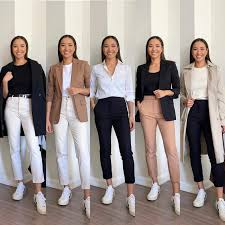

What is Office Ready Style?
Office Ready fashion is all about combining professionalism with style, allowing you to look polished and feel comfortable throughout your workday. This style is typically more structured, but can still incorporate personal touches and trends that suit your unique look.
Key Pieces for Office Ready Fashion
- Blazers: A tailored blazer adds structure and professionalism to any outfit.
- Pencil Skirts: The perfect balance between fitted and formal, a pencil skirt is a classic office piece.
- Button-Down Shirts: A crisp button-down is a versatile piece that pairs well with trousers or skirts.
- Smart Trousers: Tailored trousers in neutral shades are ideal for an office setting.
Office Ready Outfit Ideas

Tips for Nailing Office Ready Style
Here are some tips to help you look your best in the office:
- Stick to neutral tones like black, navy, grey, or beige for a professional look.
- Invest in quality basics that you can mix and match to create different outfits.
- Accessorize with minimalist jewelry, such as a simple watch or stud earrings, to add subtle elegance.
- Ensure your shoes are polished and appropriate for the office, like loafers, pumps, or ballet flats.